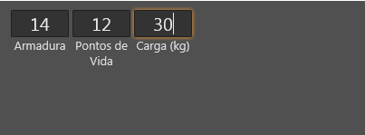

Tag template
Tag template
Com esta tag, o programador pode criar seu próprio conjunto de tags do Lua Form que sempre que forem usada, serão substituídas pelo conteúdo do template.
Observação: Esta tag não representa um componente do lua form e todas as tags que estão dentro do template só existirão de fato quando o modelo for invocado.
Características
Propriedades e atributos
| Propriedade | Tipo | Valor Padrão | Descrição |
|---|---|---|---|
| name | String | \<Não há valor padrão> | Nome do template. É através deste campo que o programador consegue invocar o modelo posteriormente, usando uma tag de mesmo nome. O preenchimento deste campo é obrigatório. |
Definindo e invocando templates
| \<?xml version="1.0" encoding="UTF-8"?> \<form name="frmFichaTeste"> \<template name="MinhaTag"> \<label text="Label da Minha Tag" align="top" horzTextAlign="center"/> \</template> \</form> |
|---|
\ Neste exemplo, usando template, nós definimos um modelo chamado MinhaTag....
Mas só a definição do template não acarreta em nada! Veja como o exemplo acima fica:
É preciso invocar o modelo....
| \<?xml version="1.0" encoding="UTF-8"?> \<form name="frmFichaTeste"> \<template name="MinhaTag"> \<label text="Label da Minha Tag" align="top" horzTextAlign="center"/> \</template> \<MinhaTag/> \<MinhaTag/> \<MinhaTag/> \<MinhaTag/> \</form> |
|---|
Agora invocamos "MinhaTag" 4 vezes... Toda vez que usamos a tag "MinhaTag" no exemplo, ela foi substituída por uma cópia do conteúdo de template.

Se adicionarmos um edit ao template, o resultado mudaria para:
| \<?xml version="1.0" encoding="UTF-8"?> \<form name="frmFichaTeste"> \<template name="MinhaTag"> \<label text="Label da Minha Tag" align="top" horzTextAlign="center"/> \<edit align="top"/> \</template> \<MinhaTag/> \<MinhaTag/> \<MinhaTag/> \<MinhaTag/> \</form> |
|---|

Passando parâmetros para o template
É possível passar parâmetros para o template na hora da substituição! Para passar um parâmetro, basta definir um atributo ao invocar o modelo e para usar o parâmetro no modelo, o programador deve usar $(nomeDoAtributo) para a substituição parametrizada.
Exemplo:
| \<?xml version="1.0" encoding="UTF-8"?> \<form name="frmFichaTeste"> \<template name="MinhaTag"> \<label text="Atributo $(titulo)" align="top" horzTextAlign="center"/> \<edit text="$(conteudo)" align="top" horzTextAlign="center"/> \</template> \<MinhaTag titulo="Força" conteudo="10"/> \<MinhaTag titulo="Destreza" conteudo="14"/> \<MinhaTag titulo="Inteligência" conteudo="17"/> \</form> |
|---|

Observação: Quando a tag template é invocada com um corpo texto (Exemplo: \<minhaTag>Corpo Texto\</minhaTag>), um parâmetro chamado "body" é criado com este conteúdo.
Templates avançados usando LUA na hora da substituição.
É possível criar templates avançados usando A linguagem de programação LUA na hora da substituição.
Todo comentário de XML dentro de templates são tratados como códigos lua que devem ser executado no momento da substituição!
Exemplo:
| \<?xml version="1.0" encoding="UTF-8"?> \<form name="frmFichaTeste"> \<template name="Municao"> \<layout width="$(largura)" height="20" align="top"> \<label text="$(titulo) :" align="left" horzTextAlign="center" width="60"/> \<!-- for i = 1, quantidade, 1 do --> \<checkBox align="left" width="20"/> \<!-- end; --> \</layout> \</template> \<Municao largura="300" titulo="Flechas" quantidade="20"/> \<Municao largura="300" titulo="Bombas" quantidade="4"/> \<Municao largura="300" titulo="Dardos" quantidade="10"/> \</form> |
|---|
Neste exemplo, o parâmetro "quantidade" é utilizado em um código LUA para emitir várias vezes a tag \<checkBox> durante o tempo de substituição. Vários checkBox foram emitidos com pouco esforço.
Exemplos
Exemplo 1 - Uma pequena ficha usando templates
| \<?xml version="1.0" encoding="UTF-8"?> \<form name="frmFichaTeste"> \<template name="LayoutUmCampo"> \<layout width="64" align="left" margins="{left=2, right=2}"> \<edit field="$(campo)" height="30" horzTextAlign="center" fontSize="20" align="top"/> \<label text="$(titulo)" align="top" horzTextAlign="center" vertTextAlign="leading" autoSize="true"/> \</layout> \</template> \<layout left="10" top="10" width="200" height="64"> \<LayoutUmCampo campo="combate.armadura" titulo="Armadura"/> \<LayoutUmCampo campo="saude.pontosDeVida" titulo="Pontos de Vida"/> \<LayoutUmCampo campo="equipamentos.carga" titulo="Carga (kg)"/> \</layout> \</form> |
|---|

Exemplo 2 - Lista de perícias de D\&D 3.5 usando templates
| \<?xml version="1.0" encoding="UTF-8"?> \<form name="frmFichaTeste"> \<template name="CampoEmUmLayoutDeCampos"> \<layout align="top" height="17" margins="{bottom=2}"> \<checkBox width="17" align="left" margins="{right=5}"/> \<label align="left" width="120" text="$(titulo):" horzTextAlign="trailing" margins="{right=5}"/> \<edit align="left" horzTextAlign="center" fontSize="16" width="64"/> \</layout> \</template> \<template name="LayoutDeCampos"> \<layout left="20" top="20" width="250" height="800"> \<!-- listaDeCampos = totable(body); for k, v in pairs(listaDeCampos) do CampoParaGerar = v; * --> \<CampoEmUmLayoutDeCampos titulo="$(CampoParaGerar)"/> \<!-- * end; --> \</layout> \</template> \<LayoutDeCampos> {"Abrir Fechaduras", "Acrobacia", "Adestrar Animais", "Arte da Fuga", "Atuação", "Avaliação", "Blefar", "Cavalgar", "Concentração", "Conhecimento", "Cura", "Decifrar Escrita", "Diplomacia", "Disfarce", "Equilíbrio", "Escalar", "Esconder-se", "Falsificação", "Furtividade", "Identificar Magia", "Intimidar", "Natação", "Observar", "Obter Informação", "Ofícios", "Operar Mecanismo", "Ouvir", "Procurar", "Profissão", "Prestidigitação", "Saltar", "Sentir Motivação", "Sobrevivência"} \</LayoutDeCampos> \</form> |
|---|
Created with the Personal Edition of HelpNDoc: Easily create Qt Help files